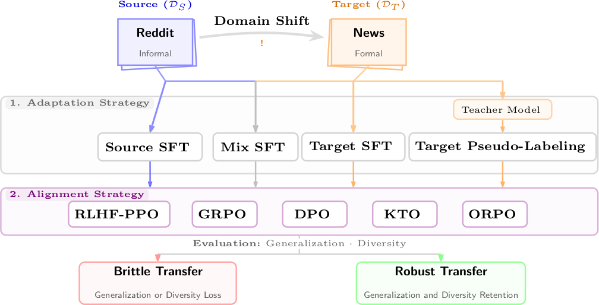
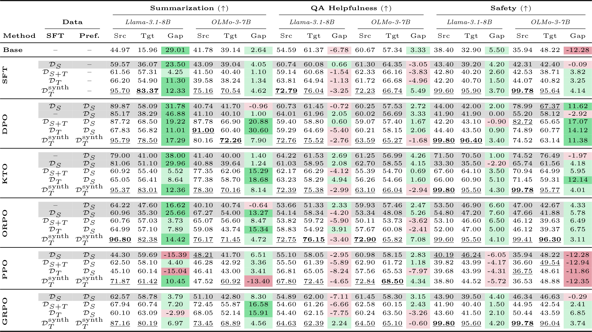
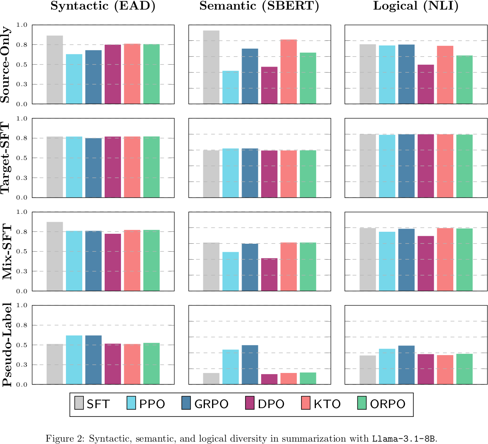

Abstract
Preference tuning aligns base language models to human judgments of quality, helpfulness, or safety by optimizing over explicit preference signals rather than likelihood alone. Prior work has shown that preference tuning degrades performance and reduces helpfulness outside the training domain. However, the extent to which adaptation strategies mitigate this domain shift remains unexplored. We address this challenge by conducting a comprehensive and systematic study of alignment generalization under domain shift. We compare five popular alignment objectives and various adaptation strategies from source to target, including target-domain supervised fine-tuning and pseudo-labeling, across summarization, question-answering helpfulness, and safety alignment tasks. Our findings reveal systematic differences in generalization across alignment objectives under domain shift. We show that adaptation strategies based on pseudo-labeling substantially reduce domain-shift degradation but induce mode collapse, revealing a generalization–diversity trade-off.
Problem setup
We study preference tuning when labeled preferences are available only in a source domain. A policy πθ learns from the labeled source preference set DSpref and an unlabeled target-domain corpus DT, then generates outputs that should remain high quality after the domain shift.
Available supervision
Source domain DS: prompts with demonstrations, preference pairs, or desirable/undesirable labels, depending on the objective.
Target domain DT: prompts and responses without preference annotations.
Learning objective
Use source preference supervision and target-domain data to learn a policy that generalizes to DT. Quality means task performance, stylistic appropriateness, or safety, depending on the testbed.
Adaptation axis
We compare source SFT, mixed source–target SFT, target SFT, and target pseudo-labeling. For pseudo-labeling, a larger teacher supplies preferred target-domain responses that are formatted for each alignment objective.
Alignment axis
We compare five objectives spanning offline and online paradigms: DPO, KTO, ORPO, RLHF-PPO, and GRPO, alongside the SFT baselines.


What are the main findings?
- Pseudo-labeling dominates summarization transfer. For Llama-3.1-8B, pseudo-labeled SFT achieves the highest target win rate (83.37), while lifting OLMo-3-7B DPO to 72.26, above all non-synthetic methods.
- Offline alignment over-specializes to the source domain. Source-only DPO on Llama-3.1-8B reaches 89.87 in domain but 58.09 out of domain; GRPO keeps its gap at 3.79 on the same testbed.
- QA helpfulness is comparatively stable under the near-domain shift. Scores remain within a narrow ±8-point gap, but a domain-aware judge reveals that standard helpfulness evaluation can miss epistemic and stylistic mismatch.
- Safety transfer is model- and objective-dependent. Pseudo-labeled objectives other than PPO exceed 95% target safety on Llama-3.1-8B. Without pseudo-labeling, KTO achieves the highest OLMo-3-7B target safety score (76.49%).


Why does pseudo-labeling help?
Teacher quality alone does not close the domain gap. For DPO, source-domain pseudo-labeling raises CNN/DailyMail target win rate from 58.09 to 62.88, while target-domain pseudo-labeling reaches 78.50. Because the teacher is the same in both synthetic conditions, the 15.62-point difference isolates the value of domain relevance.
| Method | SFT data | Preference data | Source | Target | Gap |
|---|---|---|---|---|---|
| SFT | DS | — | 59.57 | 36.07 | 23.50 |
| SFT | DSsynth | — | 72.41 | 44.15 | 28.26 |
| SFT | DTsynth | — | 95.70 | 83.37 | 12.33 |
| DPO | DS | DS | 89.87 | 58.09 | 31.78 |
| DPO | DSsynth | DSsynth | 90.52 | 62.88 | 27.64 |
| DPO | DTsynth | DTsynth | 95.79 | 78.50 | 17.29 |
Table 2: Isolating teacher quality from domain relevance on TL;DR → CNN/DailyMail with Llama-3.1-8B. DSsynth denotes source-domain pseudo-labeled data.
What is the cost of pseudo-labeling?
Despite high win rates, pseudo-labeling sharply contracts semantic and syntactic variety in summarization. Semantic diversity drops to 0.07–0.08 across offline objectives, and syntactic diversity falls from 0.86 for source-only SFT to 0.51 for pseudo-labeled SFT.
Online RL preserves more diversity under pseudo-labeling: PPO and GRPO retain semantic diversity of 0.22 and 0.25, respectively, compared with 0.07–0.08 for the offline objectives.

Can a standard judge miss domain mismatch?
Yes. A domain-agnostic helpfulness judge can reward a logically sound response even when it violates AskCulinary’s expected expertise and pragmatic style. A domain-aware judge lowers source-only DPO by 3.83 points, while pseudo-labeled DPO improves by 3.48 points, revealing genuine target-domain calibration.
| Method | SFT data | Preference data | Standard | Domain-aware | Δ |
|---|---|---|---|---|---|
| SFT | DS | — | 60.08 | 57.06 | −3.02 |
| SFT | DS+T | — | 60.68 | 60.24 | −0.44 |
| SFT | DT | — | 64.94 | 61.45 | −3.49 |
| SFT | DTsynth | — | 76.04 | 77.60 | +1.56 |
| DPO | DS | DS | 61.45 | 57.62 | −3.83 |
| DPO | DS+T | DS | 58.80 | 60.94 | +2.14 |
| DPO | DT | DS | 64.69 | 61.92 | −2.77 |
| DPO | DTsynth | DTsynth | 75.52 | 79.00 | +3.48 |
Table 3: Standard versus domain-aware judge win rates on AskCulinary with Llama-3.1-8B. Δ = domain-aware − standard.
How much synthetic data is needed?
Reducing the pseudo-labeled data by 90% causes only small changes. For SFT, KTO, and ORPO, the 10% subset slightly outperforms the full synthetic dataset on the target domain, indicating that the benefit is driven by domain relevance rather than volume.
| Method | Dataset size | Win rate (%) | |
|---|---|---|---|
| Source | Target | ||
| SFT | Full | 95.70 | 83.37 |
| 10% | 92.75 | 83.68 | |
| DPO | Full | 95.79 | 78.50 |
| 10% | 96.30 | 77.08 | |
| KTO | Full | 95.37 | 83.01 |
| 10% | 95.30 | 84.38 | |
| ORPO | Full | 96.80 | 82.38 |
| 10% | 92.26 | 82.58 | |
Table 4: Data efficiency of pseudo-labeling on TL;DR → CNN/DailyMail with Llama-3.1-8B. The small setting uses 10% of the synthetic data.
Does the order of SFT stages matter?
Strongly. Target SFT before source SFT reaches a 56.40 target win rate, compared with 35.22 in the reverse order. Adding an intermediate source-SFT stage before source DPO raises target performance further, from 56.82 to 65.56.
| Method | Source win rate | Target win rate |
|---|---|---|
| SFT order | ||
| SFT DT → SFT DS | 67.23 | 56.40 |
| SFT DS → SFT DT | 61.00 | 35.22 |
| Intermediate step | ||
| SFT DT → DPO DS | 67.83 | 56.82 |
| SFT DT → SFT DS → DPO DS | 91.88 | 65.56 |
Table 5: Win rates on TL;DR → CNN/DailyMail with Llama-3.1-8B when varying the sequence of SFT stages.
Qualitative case studies
Aggregate win rates hide two different kinds of domain-shift behavior. The examples below reproduce the paper’s appendix outputs in full, without the table layout or ellipses used in the main paper.
Epistemic drift: engineering advice in a culinary domain
All responses answer the same AskCulinary prompt with Llama-3.1-8B and DPO. Source-only adaptation frames cooking as heat and fat management, while target adaptation moves toward culinary vocabulary and conventions.
Whenever I roast a turkey or turkey parts I always put chopped celery/carrots/onions underneath in the sheet pan because that's what the instructions typically tell me, but does it serve a purpose of somehow flavoring the turkey or is there another reason for this practice? I was thinking it may have something to do with neutralizing the fat that drips down so it doesn't smoke/burn. I have some string beans in the fridge and about to cook some turkey thighs, any reason I couldn't use those instead of the standard misen poix?
Human reference
If you are making roast potatoes I love placing the spuds under the bird (rack in between) and letting the fat drip down into them
Base model
Thanks. It is not to flavor the turkey; it is to flavor the gravy that you will make from the drippings. A lot of people don't like celery and carrots in their gravy, so they use them as a flavoring agent for the gravy, then remove them before serving the gravy.
Takeaway. A domain-agnostic judge can rate all four answers as helpful because each supplies a logical justification, while missing whether the answer sounds like appropriate culinary expertise.
Structural mode collapse under pseudo-labeling
The target pseudo-labeled DPO model maps three unrelated CNN/DailyMail articles onto the same discourse skeleton. The repeated template appears in roughly 10% of its summaries, versus roughly 0.2% for the source-only model and human references, closely tracking the teacher’s rate of 10.5%.
Takeaway. The summaries remain fluent and informative, so the judge rewards them, but the student inherits the teacher’s repeated discourse frame instead of preserving the target domain’s tonal variation.
BibTeX
@misc{karouzos2026preference,
title = {An Empirical Study on Preference Tuning Generalization and Diversity Under Domain Shift},
author = {Constantinos Karouzos and Xingwei Tan and Nikolaos Aletras},
year = {2026},
eprint = {2601.05882},
archivePrefix = {arXiv},
primaryClass = {cs.CL}
}The arXiv citation is shown until the final ACL Anthology proceedings record is available.
Acknowledgments
We thank Jasivan Sivakumar, Vynska Amalia Permadi, Sam Lewis-Lim, Yanwen Peng, and Atsuki Yamaguchi for their valuable help and feedback. CK is supported by the Centre for Doctoral Training in Speech and Language Technologies (SLT) and their Applications funded by UK Research and Innovation grant [grant number EP/S023062/1]. XT and NA are supported by the EPSRC [grant number EP/Y009800/1], through funding from Responsible AI UK (KP0016) as a Keystone project.
We acknowledge (1) IT Services at the University of Sheffield for the provision of services for high-performance computing; (2) the use of the University of Oxford Advanced Research Computing (ARC) facility; (3) the EuroHPC Joint Undertaking for awarding this project access to the EuroHPC supercomputer LEONARDO, hosted by CINECA (Italy) and the LEONARDO consortium through a EuroHPC Development Access call; (4) the use of resources provided by the Isambard-AI National AI Research Resource (AIRR). Isambard-AI is operated by the University of Bristol and is funded by the UK Government’s Department for Science, Innovation and Technology (DSIT) via UK Research and Innovation; and the Science and Technology Facilities Council [ST/AIRR/I-A-I/1023].
Website acknowledgment
This project page is built from the Academic Project Page Template by Eliahu Horwitz, itself adapted from the Nerfies project page. The template is licensed under CC BY-SA 4.0. Page text, figures, tables, and qualitative examples are adapted from the camera-ready paper by the authors.